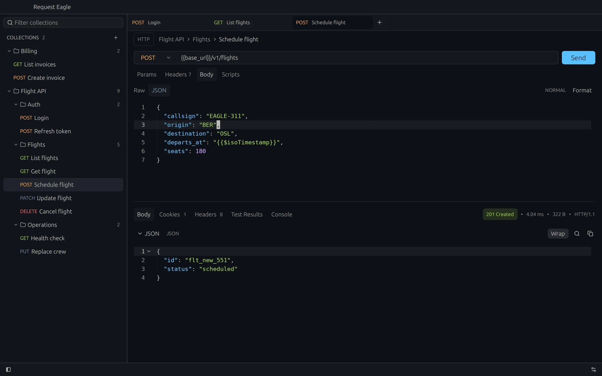
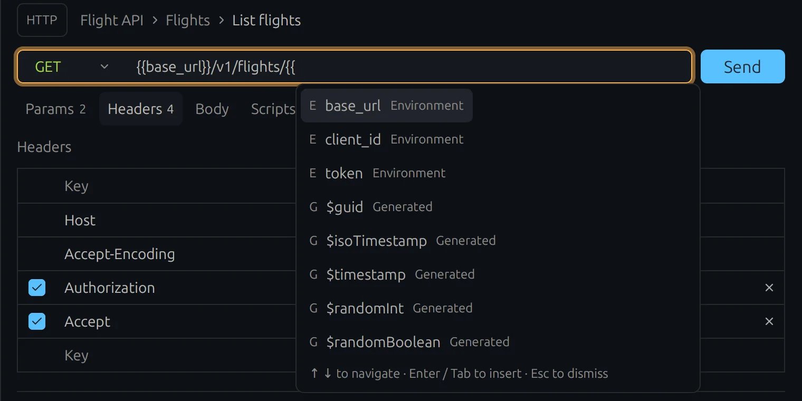

Name
request-eagle: a native Postman alternative built in Rust with GPUI.
No web view and no account. The interface renders on the GPU, and collections are folders of readable files.
A native API client for people who live in the terminal. Rebindable shortcuts, Vim mode, scripts, and a CLI your agents can drive. Every request is a TOML file.

request-eagle: a native Postman alternative built in Rust with GPUI.
No web view and no account. The interface renders on the GPU, and collections are folders of readable files.
Every action has a shortcut. Every shortcut can be rebound.
Send works from the URL, the fields, the body editor and the response. On Linux the modifier is Ctrl.
A core Vim binding set in the body and script editors.
Turn it on in Settings → General → Editor. It applies to open tabs immediately, and the editor shows the current mode.
Counts work, and operators accept search as a motion. Ex commands, macros, text objects and dot-repeat are not implemented yet.
Type {{ and keep typing.
Completion opens in the URL, query, headers and JSON body. Arrow keys move, ↵ or Tab inserts, Esc dismisses.

JavaScript before the request and after the response.
A familiar pm.* API with top-level await, assertions, JSON
Schema checks, SHA-256, HMAC and Base64. Completion comes from a bundled TypeScript
service, so Node.js is not required.
// Pre-request: fetch a token, then attach it const login = await pm.sendRequest({ url: "{{base_url}}/login", method: "POST", }); pm.environment.set("token", login.json().token); // Post-response: test what came back pm.test("Status is 200", () => { pm.response.to.have.status(200); });

request-eagle-cli: the same collections, for agents.
An optional standalone binary for macOS and Linux. It speaks JSON, describes its own schema, and needs no token, socket, daemon or running app.
$ request-eagle-cli schema $ request-eagle-cli call '{"command":"collections.list"}' $ request-eagle-cli call '{"command":"requests.list","query":"health"}' $ request-eagle-cli call '{"command":"requests.run","path":"/absolute/path/Health.toml","timeout_ms":10000}'
Plain files that belong in version control.
~/.request-eagle/ ├── collections/ │ └── Flight API/ │ ├── environment.toml # base_url = "https://example.com" │ ├── Auth/ │ │ └── Login.toml │ └── Flights/ │ ├── List flights.toml │ └── Schedule flight.toml ├── keybindings.json └── preferences.json